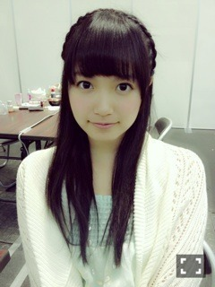
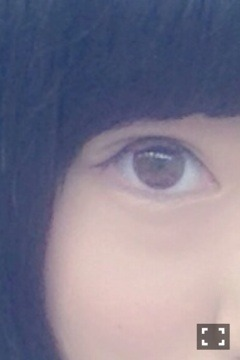
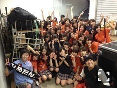

| 2013/09 12 Thu | いちごミルクのきり たんぽ(´>∀<｀)ゝ |
ちはるーむへようこそ(●´-` ●)
顎の能條。
ムンクのふたり。
やっと英単語テスト終わって解放ヽ(・∀・)ノやたやた
とゆことで遅くなりました...
申し訳ないです...
(●´-` ●)(●´-` ●)(●´-` ●)(●´-` ●)
集計結果っ
1位 ひめたん
2位 まりか
3位 いくちゃん
まいまい
5位 さゆりん
6位 ゆったん
7位 みさ
8位 ななせ
9位 みなみ
以下割愛。。
ダントツのひめたん！♡
なのでー
結果はっ
ほいさっ

ひめたん！！めーちゃん！！
ちーちゃんが撮ったの(●´-` ●)
めーちゃん美女でしょ


この子やっ！て思う子を教えてください(｢･ω･)｢
(●´-` ●)(●´-` ●)(●´-` ●)(●´-` ●)
青森楽しかった涼しかった

来てくれた大勢の皆さんっ
ほんとにありがとう♡( ´ ▽ ` )ﾉ
おうちにパーカー忘れたから
能條さんにのパーカーお借りしました。(´･ω･`)
お世話になりました。(´･ω･`)
あ、ちなみにちなみにこのパーカーの下の青の服、ワンピースなんだけども
能條さんと色違いのやつよ！！
能條ファッションってやつ←
(●´-` ●)(●´-` ●)
そして土曜日は氣志團フェスっ
乃木坂を呼んでくださってありがとうございます(o^^o)！
たくさんの方々に、
乃木坂っていいじゃん！
曲もっと聞きたい！
って少しでも思ってもらえるように♡
このチャンスをものにして頑張りますっ！！

(●´-` ●)(●´-` ●)
今日は朝日新聞さんのよのなか科♪
大人でも悩むような難しい議題にチャレンジしましたっっ
いつもは笑顔たっぷりだけど
悩みすぎて悩みすぎて
眉間にしわの私たち、とくとご覧あれd(￣ ￣)笑
(●´-` ●)(●´-` ●)
日村さん、ニュースみてびっくりしました...
お大事にしてください(´._.`)
わざわざライブにもきてくださったり、
また別のライブの日に
ライブ見れないけど頑張って！って差し入れくださったり、
京都のお土産を買ってきてくださったり
本当に優しくて面白くて素敵な方で
そんな方と一緒の番組をつくれることがすごく嬉しくて(o^^o)
だから少しでも早く元気な姿を見たいですっ(> <)
メンバーみんな待ってます！！

(●´-` ●)(●´-` ●)
明日のリハも頑張ろっと！！！
学校も一週間終わるし！！！
充実した一日にできるように
みんなでがんばろうっ

あ！！そいえばこの題名...
ちーむＤでちょくちょく見ませんでした？？(●´-` ●)
ばいるんっ
るんるんっ
ちはるんっ
(´>∀<｀)ゝ
コメント(224)
2013/09/12 23:36